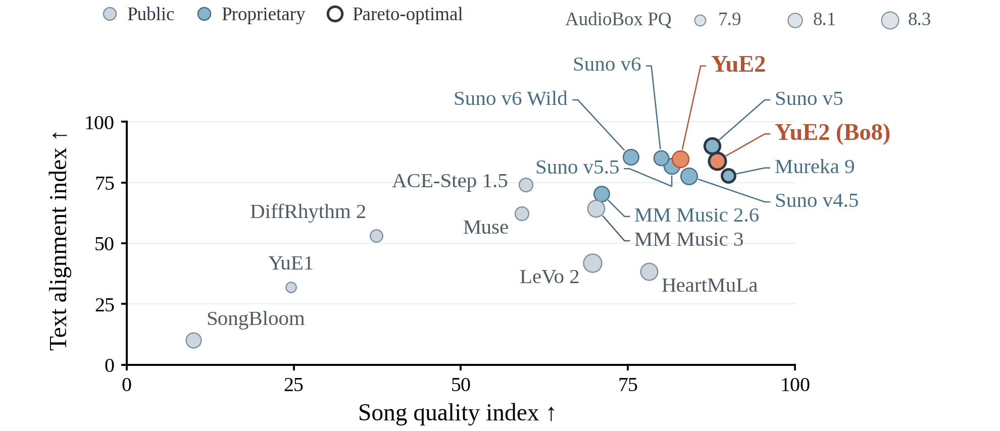
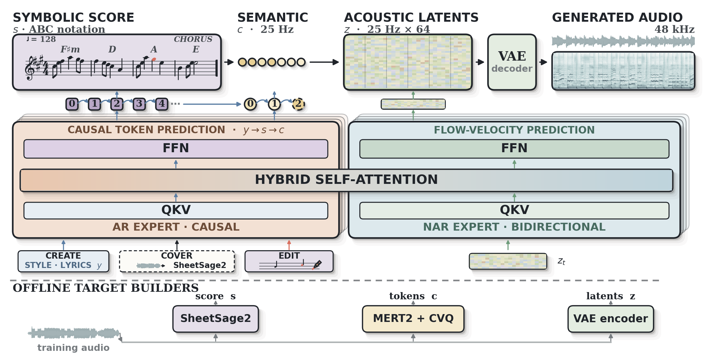

Selected score
Loading selected song…
The generated song
The symbolic score
Frontier-quality song generation, with an editable musical plan. SongBench SOTA on WildSongBench with YuE2 (best-of-8).
Choose a song, then listen to its score and follow the notes.
Selected score
A familiar song can take a different shape. Listen to changes in melody, lyrics, tempo, and arrangement.
The listening selection, gathered across genres and languages.
YuE2 (best-of-8) reaches 6.9632 on SongBench, the highest observed mean among 15 evaluated settings on WildSongBench (192 prompts). The figures below show the comparison and how the model works.
Figure 1

Model architecture

| Rank | System / setting | Prompts | SongBench ↑ |
|---|
September 5, 2026 evaluation · rankings vary by metric.
Download resultsWildSongBench. 192 prompts and 15 system settings. The headline reports the highest observed SongBench mean in this automatic evaluation. Best-of-8 selects one of eight generations by musicality, prompt control, and lyric accuracy.
Figure 1. Song quality combines SongBench and SongEval; text alignment combines MuLan, AllMusicCaps, and prompt control. Both axes show normalized comparison indices. Bubble area represents AudioBox production quality.